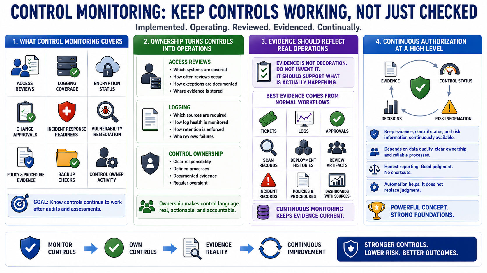

Control Monitoring and Compliance Evidence
Connecting to LMS... Progress: in progress

Narration
Control monitoring examines whether security controls remain implemented, operating, reviewed, and supported by evidence. This can include access reviews, logging coverage, backup checks, encryption status, change approvals, incident response readiness, vulnerability remediation metrics, policy and procedure evidence, and control owner activity. The goal is to know whether controls continue to work after the assessment or audit moment has passed.
Control owners need clear responsibility. If a control depends on access reviews, someone must know which systems are covered, how often reviews occur, how exceptions are documented, and where evidence is stored. If a control depends on logging, someone must know which sources are required, how log health is monitored, how retention is enforced, and who reviews failures. Ownership turns control language into operations.
Compliance evidence should reflect real operations. Evidence is not decoration, and it should not be invented when missing. It should support claims about what is actually implemented, reviewed, and operating. The best evidence often comes from normal workflows: tickets, logs, approvals, scan records, deployment histories, review artifacts, incident records, and dashboards with traceable sources. Continuous monitoring helps keep that evidence current.
Continuous authorization concepts build on this idea at a high level. Instead of treating security evidence as something assembled only for periodic events, organizations increasingly try to keep evidence, control status, and risk information continuously available. The concept is powerful, but it depends on data quality, clear ownership, reliable processes, and honest reporting. Automation helps, but it does not replace judgment.